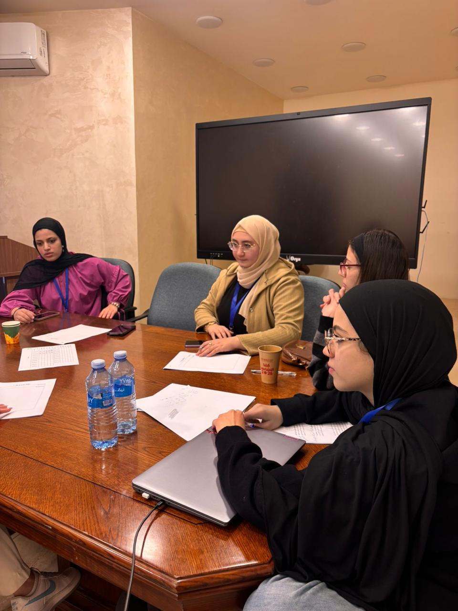
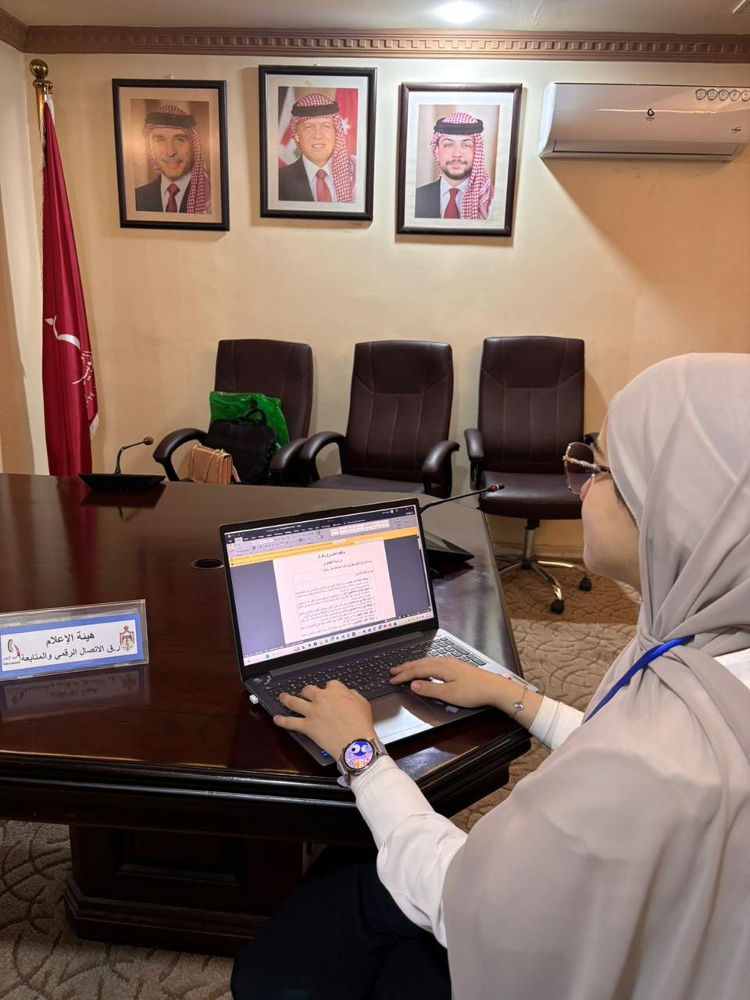
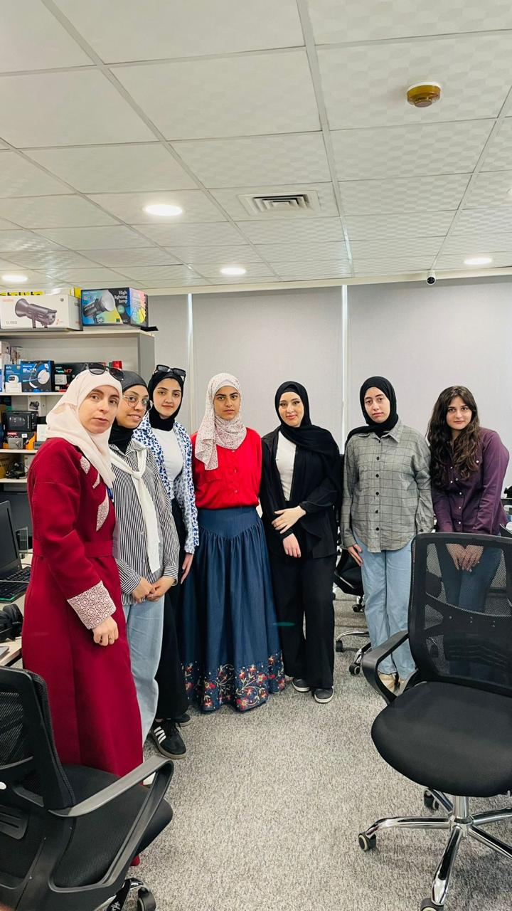
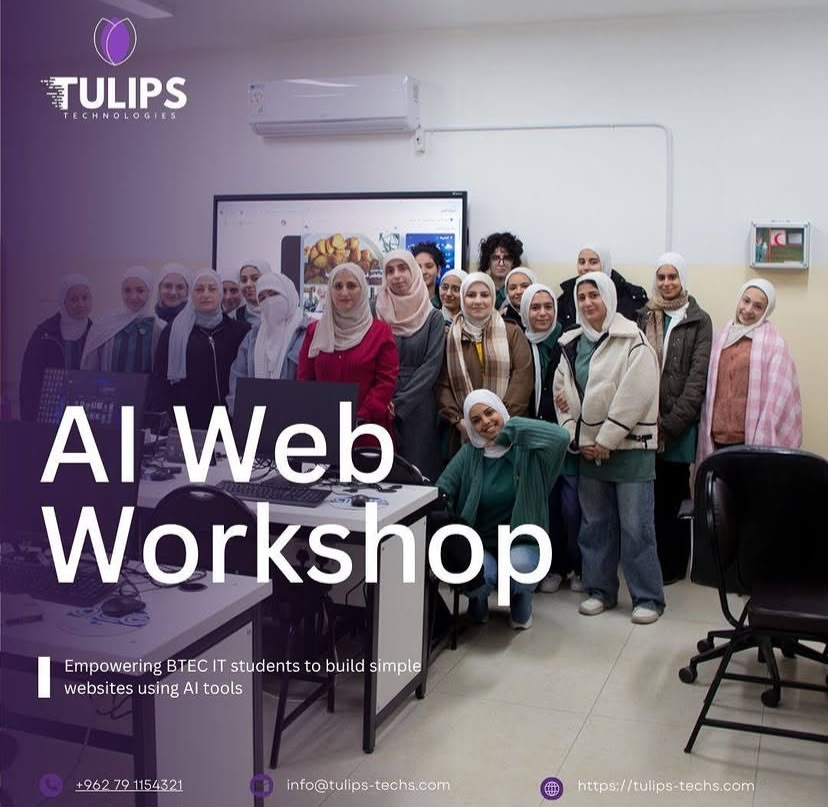

التدريب الميداني
يتيح برنامج BTEC تكنولوجيا المعلومات للطلاب فرصة التقدم إلى التدريب الميداني في بيئة العمل، والذي يعد تجربة مهمة تساعدهم على الانتقال من التعلم النظري إلى التطبيق العملي. وخلال هذا التدريب، يتعرف الطلاب على طبيعة العمل داخل المؤسسات والشركات، ويكتسبون خبرة في التعامل مع الموظفين، والتعرف على المهام والمسؤوليات المهنية، وتطبيق المهارات التقنية التي تعلموها خلال دراستهم. كما يمنحهم التدريب الميداني فرصة لاكتساب مهارات التواصل والعمل الجماعي، وتنظيم الوقت، وتحمل المسؤولية، والتعامل مع المشكلات الواقعية وإيجاد الحلول المناسبة لها. ويساعد هذا التدريب الطلاب على فهم متطلبات سوق العمل، واكتشاف مجالات التكنولوجيا التي تناسب اهتماماتهم، وبناء خبرة عملية تعزز استعدادهم لمستقبلهم المهني.
توزيع العلامات
يعتمد نظام التقييم في برنامج BTEC على قياس مستوى اكتساب الطالب للمهارات والمعارف من خلال المشاريع والمهام العملية والتقييمات المرتبطة بالمواد التخصصية، وليس فقط على الامتحانات التقليدية. ويهدف هذا النظام إلى تقييم قدرة الطالب على تطبيق ما تعلمه، وتحليل المشكلات، وتقديم الحلول، وتنفيذ المشاريع بصورة منظمة.
أما بالنسبة لتوزيع العلامات في البرنامج، فيتم احتساب 35% من علامة السنة الأولى للتخصص، و35% من علامة السنة الثانية للتخصص، و30% للمواد المشتركة، بحيث تشكل هذه النسب مجموع العلامة النهائية للطالب.
صور التدريب الميداني
جانب من تجربة الطلاب في بيئة العمل وتطبيق المهارات التقنية بشكل عملي.

التدريب في بيئة العمل
اكتساب الخبرة العملية والتعرف على بيئة العمل.

التطبيق العملي
تطبيق المهارات التقنية خلال فترة التدريب.

اكتساب الخبرة
التعرف على المهام والمسؤوليات المهنية.
ورشات العمل والأنشطة المدرسية
صور من الورشات والأنشطة التقنية التي تُقام داخل المدرسة لتنمية مهارات الطلاب.

ورشات تقنية
التعرف على مجالات التكنولوجيا من خلال الأنشطة التطبيقية.

التعلم والتطبيق
تنفيذ أنشطة عملية وتطوير المهارات الرقمية.

العمل الجماعي
التعاون وتبادل المعرفة والخبرات بين الطلاب.